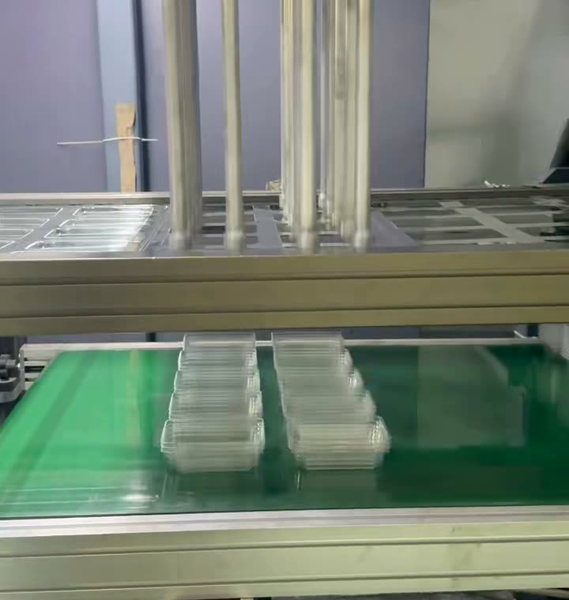
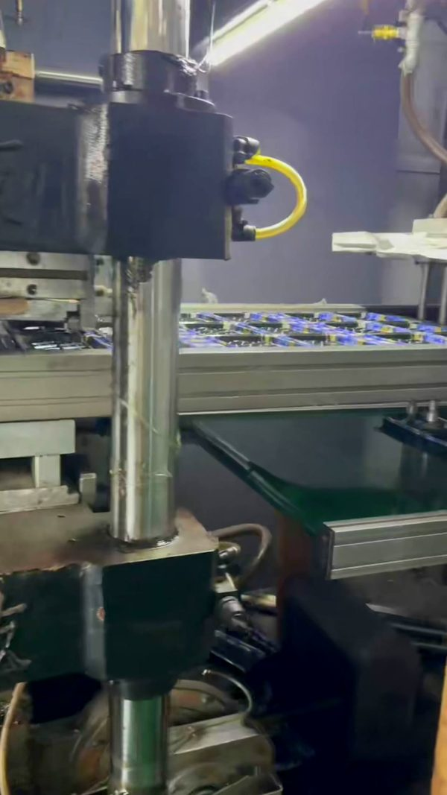

From the factory floor
Factory walkthroughs, material guides and export notes — written for importers who need to know what they are buying, not just what it costs.

Food-grade sheet, one-shot thermoforming, and a hand-checked packing bench — the four steps behind every box we ship, filmed on our own line.
Read the article →
A walkthrough of our Shantou line — how food-grade PS and OPS sheet becomes a thermoformed tray, what the certifications actually cover, and the four questions that decide your price and lead time.
Read the article →More articles on materials, MOQs, export documentation and sample programs are on the way. Questions you want answered? Send them over and we will write about them.

Scan with WeChat to add us, or search by ID
wxid_8398574091012